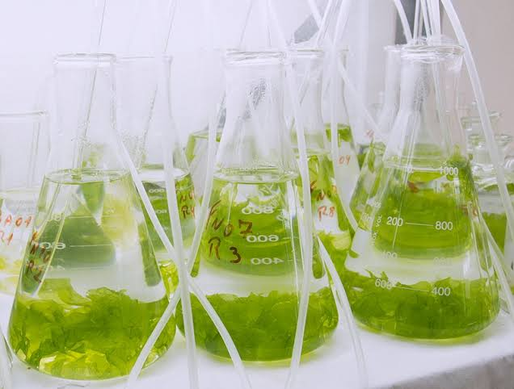

Biorremediação
Biorremediação
O que é?
É uma técnica utilizada para minimizar os impactos ambientais causados pela poluição.
Para que serve a biorremediação
Através da biorremediação, esse material recebe um destino correto, ao invés de acabar contaminando outro local.
Principal objetivo
O principal objetivo desse procedimento é favorecer o equilíbrio ecológico no ambiente que tiver sido afetado com a poluição. Também ajuda a promover a proteção de diversas espécies ao preservar suas respectivas cadeias alimentares.
